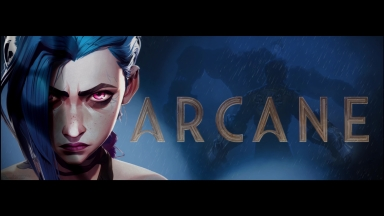

Images
Questions
- JPEG's are good for real world images with lots of variations of colors
- GIF's are good for animated photos and images that don't have lots of different colors
- PNG format has transparency
- You can use the pixlr website or you can use paint or other websites to resize the image
- Resizing it using css uses up the users battery and data
- CSS validation is checking to see if the css code is correct